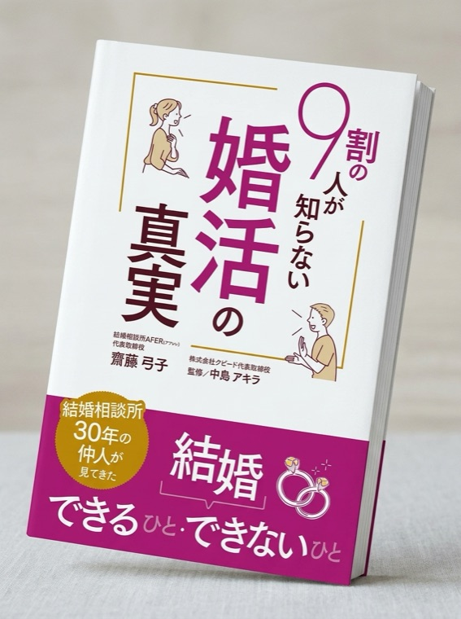

成婚が増えない
お見合いは組めるのに、交際から成婚まで進まない。
よくある悩み
集客を増やす前に、会員がどこで止まり、利益がどこから漏れているかを見極める必要があります。
お見合いは組めるのに、交際から成婚まで進まない。
広告費を増やしても、売上と利益につながっていない。
担当者によって、面談や会員への声かけが変わってしまう。
相談で整理すること
齋藤弓子の支援範囲
助言だけではありません。現状整理、支援設計、運営の標準化、改善を必要な範囲で組み合わせます。
入会から成婚までの詰まりを、数字と会員対応の両面で見える化します。
面談、交際中の声かけ、次の一手を決める判断基準を整えます。
経験のある仲人だけに頼らず、チームで支援品質をそろえます。
決めて終わりではなく、現場で続く運用へ定着させます。
ご相談の流れ
まずはフォーム送信だけで完了です。無料相談後、必要な場合にだけ次の支援をご案内します。
相談内容を送信
メールで日程調整
60分で現状整理
次の90日を決定
合う場合だけご案内
選ばれる理由
流行の一般論ではなく、30年の現場経験から今ある会員・スタッフ・数字を基準に考えます。
入会、交際、成婚、退会、集客まで現場で経験しています。

著書『9割の人が知らない婚活の真実』を出版し、ランキング1位を獲得。
著書を見る ↗
初回相談から実行順序の整理まで、齋藤弓子が直接対応します。
加盟連盟、地域、運営年数を問わず、開業前の方も相談できます。
FAQ
はい。初回の経営相談は60分無料です。継続をご希望の場合のみ、相談後に内容と料金をご案内します。
はい。加盟連盟や所在地は問いません。独立系の相談所、開業前の方もご相談いただけます。
もちろんです。初期投資、連盟選び、集客、運営体制などから整理できます。
はい。オンライン相談に対応しています。名古屋・大須での対面相談もお選びいただけます。
ご相談内容、数字、会員情報は秘密厳守で取り扱います。
お問い合わせ
お問い合わせいただいた方には、無料相談の日程をご案内します。